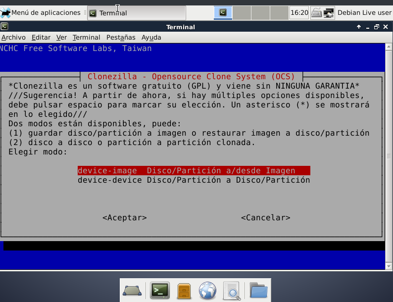
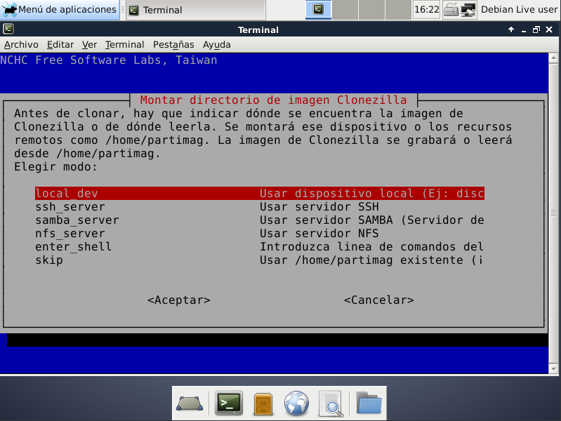
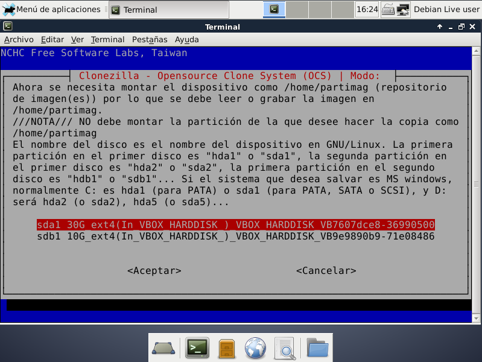
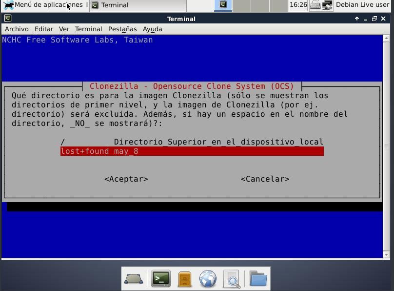
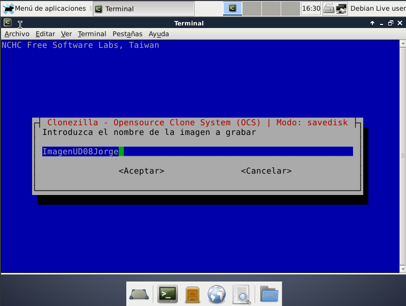
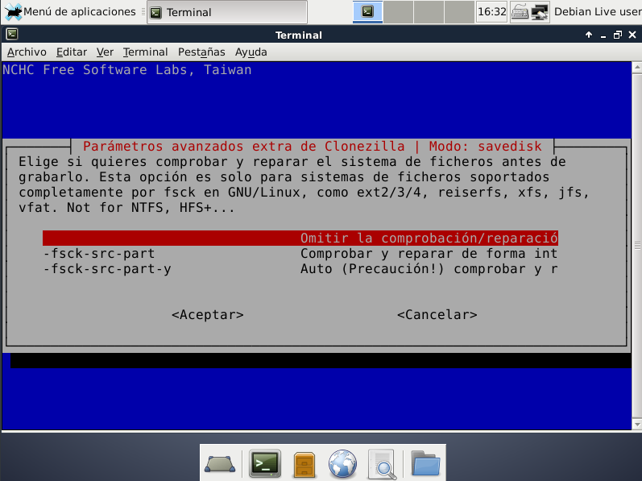
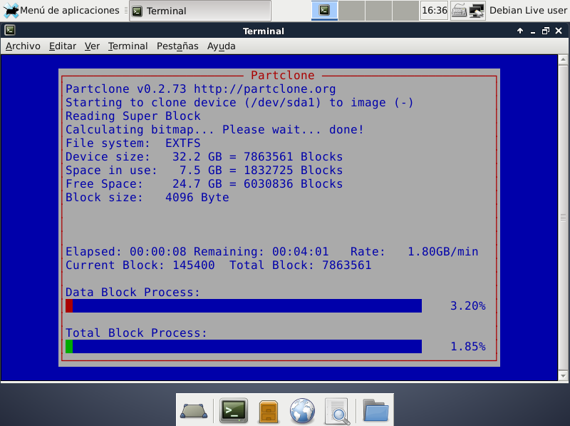
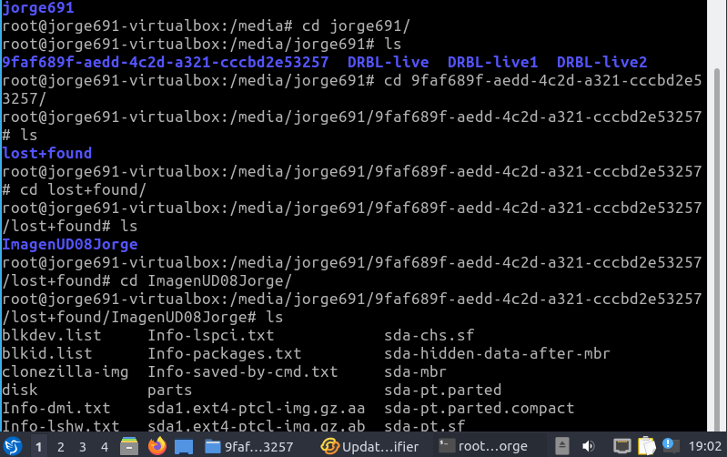
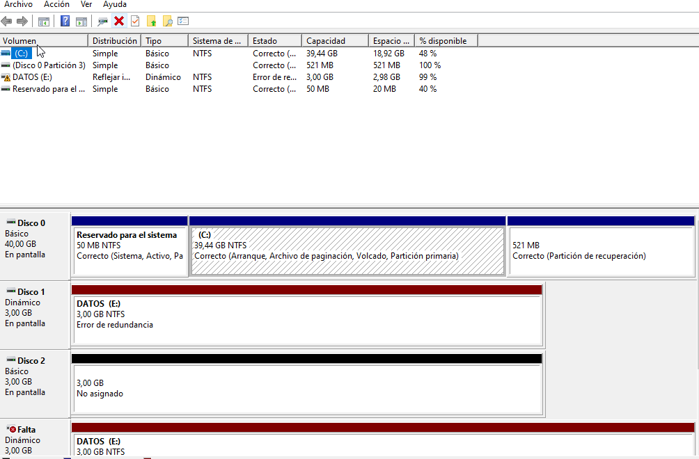
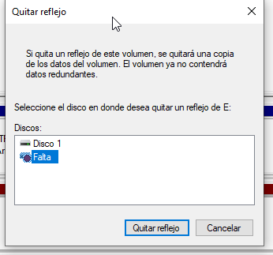

El objetivo de esta memoria es aprender a crear volumenes RAID 1 y comprender su utilidad.
1Parte I: Crear una imagen a través de DRBL (Clase)
Creo el segundo disco en VirtualBox. Y luego lo monto mediante la terminal.
Una vez montado el segundo disco. Hago un reboot pero con la iso de DRBL
Entro en clonezilla lives. Selecciono la opción de guardar la imagen en un disco.
Después, indico donde se encuentra la imagen que quiero clonar.
Indico que quiero que copie la imagen en el segundo disco, en el sdb1
Aquí indico qué directorio quiero que esté. Por error pulsé en lost+found
Aquí introduzco el nombre de la imegen que queiro grabar
Omito la comrpobación para agilizar el proceso.


Como indiqué que lo guardará en lost+found ahí estaba. Después moví la imágen a la carpeta que creé.
2Parte II: Clonar la imagen en al menos un equipo a través de la red interna
Vuelvo a arrancar la MV con DBRL. Pero ahora entro a clonezilla server.
Elijo el modo de configuración de la red.
3. A

4.

No he encontrado ninguno. Sin embargo, al principio cometí el error de eliminar el volumen en vez de eliminar el reflejo. Así que tuve que empezar de nuevo la práctica.
Los volumenes RAIDs 1 son muy útiles debido a la tolerancia a la perdida de información.